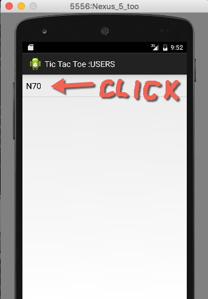
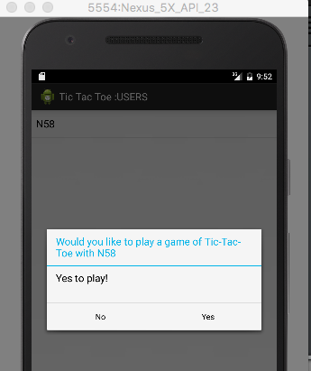
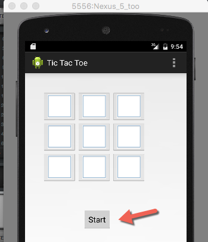
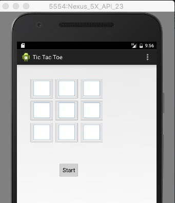
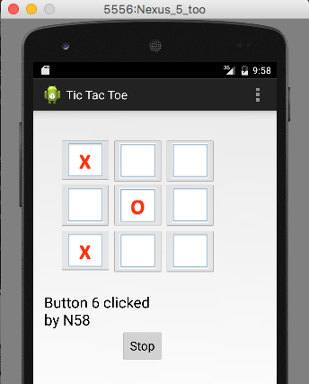

COMP 2601 Winter 2016
Ex 15 Pattern-Based Client-Server
© L.D. Nel 2016
Revisions -none yet
Description:
The purpose of this exercise is to explore a client-server application whose code organization is based on patterns. Patterns became very popular after the publication in 1994 of the Gamma et al. book "Design Patterns". Patterns are meant to provide archetypal solutions to reoccurring problems in object-oriented programming.
The demo code for this exercise consists of two parts: an android client and a java server provided as an eclipse project. You will need two android clients running to test this code as they communicate with each other through the server. Launch the server before launching the clients.
You need to demonstrate your exercise to the TA or Prof. before you leave the class to get credit for it. Marks: 2 or completion, 1 for partial progress, 0 for no show or no progress. (A mark of 1 can be upgraded to 2 is show us your completed work within one week of this exercise.)
Instructions:
Preliminary:
The demo code provided consists of a working server and an unfinished android client. Both applications are based on patterns: Singleton, Observer and Reactor. You can start a server locally but we will also start a copy on the class router so everyone can connect to the class server to communicate with each other's clients.
The application runs a Tic Tac Toe game server that allows clients to play games with each other. When a client successfully connects to the server it will see a list of all the other clients currently connected. For example, in the images below the client on the left is "N58" and the client on the right is "N70". The client on the left sees "N70" as another connected user, and the client on the right sees "N58" as another connected user.
A client can invite another user to play a game by clicking on a user in the connected users list. That user will receive an invitation to have a game.
 
If the invitation is accepted a game board will appear on both clients. One of the clients should press the "Start" button for the game to commence.
 
Once a game commences, the player who originally intitiated the game plays first by clicking on a square and the players take turns until the game ends.
 
The goal of this exercise is to study the client code and complete it so that you can have a game with one of the other users. Note the demo code will not run as discribed above until you have completed the required modifications. You will likely be able to launch the game but no X's an O's will appear until you have finished the Problem 1 exercise.
To get 1 mark for this exercise you need to be able to play a game with another user. To get 2 marks you have to beat someone!
Problem 1) Implementing the Observer Pattern.
The demo code is based on three design pattern: The Singleton Pattern, The Observer Pattern, and a Reactor Pattern. The Singleton and Observer are both from among the orginal 23 Gamma et al. patterns. The Reactor pattern is not part of the "original 23" but is commonly found in client-server applications where services are invoked from a single thread watching for client requests.
The Game and GameActivity instances are meant to participate in an Observer pattern with one playing the role of "subject" and the other the role of "observer". The implementation should be consistent with the roles of java.util.Observable and java.util.Observer.
Java has deemed the Observer pattern so important that it provides built in classes to play roles in the pattern. For this problem study what is provided by superclass java.util.Observable and the interface java.util.Observer. That is, what is required by a class to participate in one of these Observer-pattern roles.
When you feel you understand these roles, modify the Game, and GameActivity classes so that they correctly play these roles in the observer pattern.
When you have finished this problem you should be able to run your code and play the intended game. [Note there is very little code to write to do this. Just modifying a few lines and adding a method or two should be sufficient.]
Problem 2 - Singleton Pattern.
Find an instance of the Singleton Pattern being used in the demo code and be prepared to explain to the TA, or Prof. where it is and how it is being used.
Problem 3 - Reactor Pattern.
The demo code client and server both make use of a Reactor Pattern. In the client all the classes that implement this pattern is in the communication sub-package. Though the Reactor Pattern is quite complex, part of it is built like an Observer pattern. Study the classes provided and identify a portion of it that behaves like an Observer pattern. Be prepared to explain to the TA or Prof. what part of it seems to work like an Observer pattern.
When you have completed these problems demonstrate your code to the TA or Prof. to get credit for the tutorial.Â